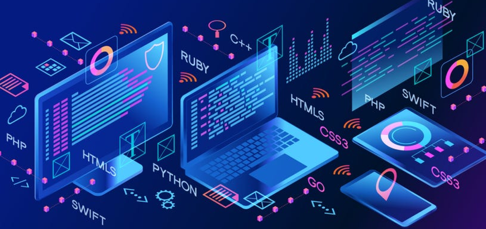

Services
Custom Software Solutions
We specialize in developing custom software solutions that are tailored specifically to meet the unique needs of your business.

Our solutions include:
- ERP Systems: Streamline your business operations with custom enterprise resource planning solutions.
- Inventory Management: Track, manage, and optimize your inventory with intelligent software systems.
- Mobile Apps: Develop intuitive mobile apps for Android and iOS, offering your customers a seamless experience.
- Desktop Applications: Build robust desktop applications that integrate with your business systems.
- Mac OS IDE Apps: Create specialized Mac OS applications that run on Xcode and enhance your team's productivity.
- Dynamic Websites: Design responsive and engaging websites powered by AI to improve user interaction.
All these solutions are enhanced with AI and ML to ensure improved functionality, optimized performance, and a better user experience.
Cyber Security Services
In today's digital world, cybersecurity is more critical than ever. We provide advanced cybersecurity solutions powered by AI to protect your business from cyber threats.

Our services include:
- AI-Powered Threat Detection: Use machine learning algorithms to detect and prevent suspicious activity before it affects your systems.
- Automated Risk Assessment: Continuously assess the vulnerability of your infrastructure with AI-driven risk analysis tools.
- Real-Time Intrusion Monitoring: Employ AI to monitor your network in real time, alerting you of potential intrusions and providing immediate responses.
- Advanced Encryption: Protect sensitive data with state-of-the-art AI encryption techniques.
Our cybersecurity services provide peace of mind, ensuring your digital assets remain secure against evolving threats.
Blockchain Solutions
We offer blockchain-based solutions to improve transparency, security, and efficiency within your business processes.

Our blockchain services include:
- Smart Contracts: Automate and secure contracts using AI-enhanced smart contract technology to ensure transparency and reduce fraud.
- Real-Time Auditing: Utilize blockchain's immutable ledger for real-time transaction auditing, ensuring accuracy and accountability.
- Supply Chain Management: Use blockchain to track goods across the entire supply chain, ensuring integrity and authenticity.
Blockchain technology, combined with AI, allows you to create secure, transparent systems for your business.
AI & ML Model Development
We design and develop custom AI and ML models to address your business challenges and provide actionable insights.
Our services include:
- Predictive Analytics: Build models that forecast business trends and outcomes based on historical data.
- Recommendation Systems: Develop systems to suggest products, services, or content based on user preferences and behaviors.
- Optimization Algorithms: Create algorithms that optimize business processes, such as inventory management and logistics.
Our team will work with you to develop the most effective AI-driven models tailored to your business's specific needs.
AI-Driven Robotics Solutions
We design and implement AI-powered robotics systems that can automate complex tasks across various industries.
Our robotics solutions include:
- Industrial Robotics: Automate manufacturing processes, reducing human error and improving efficiency.
- Healthcare Robotics: Build robots that assist in surgery, patient care, and medical logistics.
- Logistics Automation: Create autonomous robots to handle warehousing, packaging, and inventory management.
Our AI-driven robotics solutions bring innovation and precision to critical tasks, improving productivity across industries.
Edge Computing & AI Integration
Implement edge computing solutions that enable AI to process data closer to where it is generated, reducing latency and improving performance.

Key benefits of edge computing with AI:
- Real-Time AI Processing: Process AI algorithms locally on edge devices, delivering instant results for time-sensitive applications.
- Improved Efficiency: Reduce the load on centralized cloud servers and optimize data flow between devices.
- Enhanced Security: Keep sensitive data closer to the source, reducing potential security risks associated with transferring large volumes of data to the cloud.
We integrate edge computing with AI to help businesses stay agile and responsive in an increasingly connected world.
Computer Vision Solutions
We build advanced computer vision applications powered by AI to transform visual data into actionable insights.
Our computer vision services include:
- Healthcare Diagnostics: Use AI to analyze medical images for faster and more accurate diagnosis.
- Autonomous Vehicles: Build vision systems that enable self-driving cars to recognize objects, signs, and obstacles in real-time.
- Retail Automation: Implement computer vision systems that monitor shelves, track inventory, and analyze customer behavior in retail environments.
Our computer vision solutions will help you leverage the power of visual data for smarter decision-making and automation.
Natural Language Processing (NLP) Solutions
We build and implement NLP solutions to help businesses understand and interact with human language in a more natural way.
Our NLP services include:
- Chatbots: Develop intelligent chatbots that can engage with customers, answer questions, and resolve issues in real-time.
- Sentiment Analysis: Analyze customer feedback, social media mentions, and reviews to understand public sentiment.
- Text Summarization: Automatically generate concise summaries of lengthy documents or articles, saving time for your team.
- Language Translation: Build AI-powered translation systems to break language barriers and enhance communication.
Our NLP solutions will enable your business to leverage the power of human language for customer engagement, support, and business intelligence.